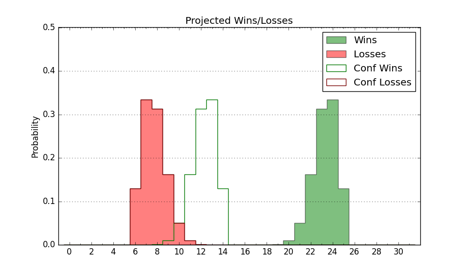

| Home | Game Probabilities | Conferences | Preseason Predictions | Odds Charts | NCAA Tournament |
| City: | Storrs, Connecticut | |
| Conference: | Big East (6th)
| |
| Record: | 5-6 (Conf) 16-6 (Overall) | |
| Ratings: | Comp.: 28.3 (6th) Net: 28.6 (6th) Off: 117.4 (5th) Def: 88.7 (13th) SoR: 81.8 (21st) |
| Remaining | ||||||
|---|---|---|---|---|---|---|
| Date | Opponent | Win Prob | Pred. | |||
| 1/31 | @ DePaul (151) | 87.8% | W 81-67 | |||
| 2/4 | @ Georgetown (214) | 92.8% | W 84-66 | |||
| 2/7 | Marquette (24) | 81.1% | W 82-72 | |||
| 2/11 | @ Creighton (12) | 46.7% | L 73-74 | |||
| 2/18 | Seton Hall (70) | 90.0% | W 75-60 | |||
| 2/22 | Providence (35) | 84.9% | W 79-67 | |||
| 2/25 | @ St. John's (89) | 78.6% | W 83-73 | |||
| 3/1 | DePaul (151) | 96.1% | W 85-62 | |||
| 3/4 | @ Villanova (66) | 71.9% | W 72-66 | |||
| Previous | Game Score | |||||
| Date | Opponent | Win Prob | Result | Off | Def | Net |
| 11/7 | Stonehill (318) | 99.2% | W 85-54 | -15.5 | 4.6 | -10.9 |
| 11/11 | Boston University (261) | 98.6% | W 86-57 | 0.8 | -1.7 | -0.9 |
| 11/15 | Buffalo (178) | 96.9% | W 84-64 | -12.0 | 2.1 | -9.9 |
| 11/18 | UNC Wilmington (152) | 96.3% | W 86-50 | 10.5 | 7.5 | 18.1 |
| 11/20 | Delaware St. (355) | 99.6% | W 95-60 | -3.0 | -5.6 | -8.6 |
| 11/24 | (N) Oregon (42) | 76.9% | W 83-59 | 12.1 | 14.9 | 27.1 |
| 11/25 | (N) Alabama (3) | 47.6% | W 82-67 | 10.2 | 10.5 | 20.7 |
| 11/27 | (N) Iowa St. (10) | 61.3% | W 71-53 | 12.2 | 9.5 | 21.7 |
| 12/1 | Oklahoma St. (45) | 86.3% | W 74-64 | 5.4 | -5.1 | 0.3 |
| 12/7 | @Florida (36) | 62.4% | W 75-54 | 7.2 | 20.7 | 27.9 |
| 12/10 | LIU Brooklyn (363) | 99.8% | W 114-61 | 9.3 | -7.8 | 1.4 |
| 12/17 | @Butler (90) | 78.7% | W 68-46 | -5.3 | 24.0 | 18.7 |
| 12/20 | Georgetown (214) | 97.8% | W 84-73 | -4.9 | -11.3 | -16.1 |
| 12/28 | Villanova (66) | 89.7% | W 74-66 | -10.6 | 2.8 | -7.8 |
| 12/31 | @Xavier (22) | 55.3% | L 73-83 | -12.8 | -8.0 | -20.8 |
| 1/4 | @Providence (35) | 62.3% | L 61-73 | -10.0 | -16.2 | -26.2 |
| 1/7 | Creighton (12) | 74.9% | W 69-60 | -4.6 | 16.3 | 11.7 |
| 1/11 | @Marquette (24) | 55.7% | L 76-82 | 6.8 | -5.0 | 1.8 |
| 1/15 | St. John's (89) | 92.6% | L 74-85 | -18.3 | -21.2 | -39.5 |
| 1/18 | @Seton Hall (70) | 72.6% | L 66-67 | -5.3 | -7.8 | -13.1 |
| 1/22 | Butler (90) | 92.6% | W 86-56 | 18.9 | 3.0 | 21.9 |
| 1/25 | Xavier (22) | 80.8% | L 79-82 | -2.3 | -17.1 | -19.3 |
| Stats & Trends | |||||
|---|---|---|---|---|---|
| Current | Day | Week | Month | Season | |
| Composite | 28.3 | +0.0 | +0.4 | -5.0 | +10.0 |
| Comp Rank | 6 | -- | -- | -4 | +20 |
| Net Efficiency | 28.6 | +0.0 | +0.2 | -7.9 | -- |
| Net Rank | 6 | -- | -- | -4 | -- |
| Off Efficiency | 117.4 | +0.0 | +1.0 | -2.2 | -- |
| Off Rank | 5 | -- | +3 | -3 | -- |
| Def Efficiency | 88.7 | -0.0 | -0.8 | -5.7 | -- |
| Def Rank | 13 | -- | -2 | -8 | -- |
| SoS Rank | 33 | -- | -4 | +114 | -- |
| Exp. Wins | 23.3 | +0.0 | -0.7 | -5.1 | +3.4 |
| Exp. Conf Wins | 12.3 | +0.0 | -0.7 | -5.1 | +0.6 |
| Conf Champ Prob | 0.6 | -0.2 | -9.7 | -90.5 | -11.9 |

| Advanced Stats | ||
|---|---|---|
| Stat | Value | Rank |
| Off Eff FG % | 0.557 | 17 |
| Off Ast Ratio | 0.184 | 12 |
| Off ORB% | 0.370 | 7 |
| Off TO Rate | 0.143 | 65 |
| Off FT Ratio | 0.364 | 57 |
| Def Eff FG % | 0.428 | 9 |
| Def Ast Ratio | 0.093 | 3 |
| Def ORB% | 0.204 | 9 |
| Def TO Rate | 0.183 | 49 |
| Def FT Ratio | 0.390 | 322 |